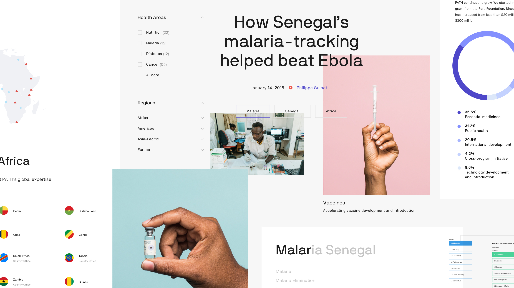
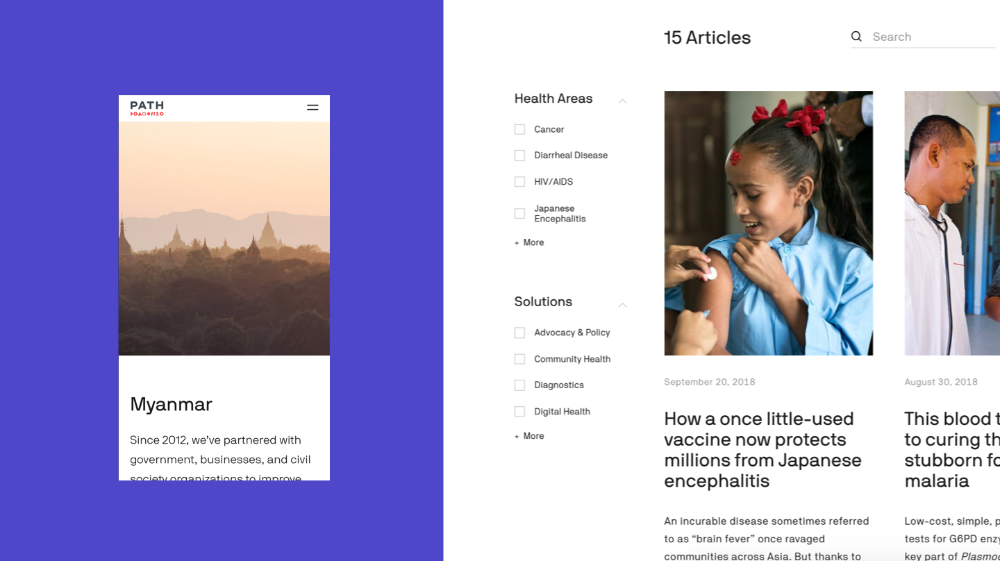
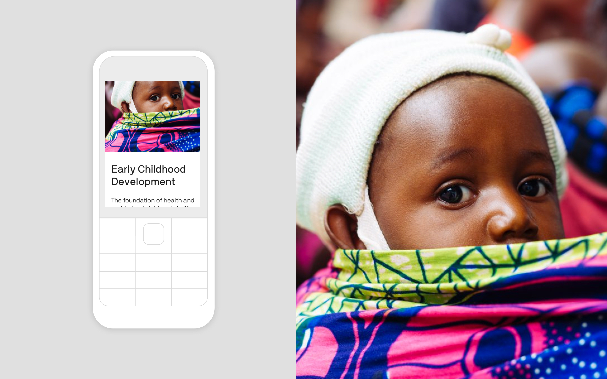

This work was completed with the amazing talent of Instrument, Portland, OR, and Manual, San Francisco, CA. The website team consisted of Adam Gault, Arietta Tetreault, Jeff Walls, Justin Kielbasa, John Brown, Kyle Petersen, Laka Richardson, Stephanie Lanning, Terra Cloyes, Tina Snow Le, Trenna Sharpe,Zech Bard
PATH is a global health NGO who have been at the forefront of the most far-reaching, life-improving innovations of the past 40 years. They engaged Instrument to help them navigate a long overdue rebrand and digital overhaul. We began with a six week discovery into their 20k page archive of disconnected (& inspirational!) digital publishing.
fig4.1 · Final homepage experience for PATH, with logo by Manual SF and product design/development & brand strategy by Instrument visit Path.org ↗
The challenge was to clearly and concisely explain the complex and collaborative work that PATH does across a huge range of health areas on nearly every continent. So we decided to avoid this problem, or the concise part at least. Because we realized our job was not to solicit $5 donations with urgent pleas. The magic of PATH was reading their stories of innovation and retelling them to friends in sound bites: “the vial sticker that saved millions of lives,” “the one grain of rice that gives millions of kids the vitamins they need,” “the bike-pump-enabled oxygen difusser for premature babies,” or “the self injected birth control”. Their stories spanned decades and all of them needed to be told.
fig4.2 · Just one of these stories, the first new diaphragm design in over 50 years, is the story of providing women around the world with access to a more safe, discreet, controlable method of contraception. (Photography by Ryan Garber) Read more ↗
The headlines didn’t tell the whole story, but they sucked you in. PATH didn’t need a new “about us” website, the needed a publishing platform. And what’s more, PATH employees around the globe were publishing, but to their own blogs. Into quiet corners of the internet. They needed to funnel into the main channel and get to the donors, partners, and scientists who needed the cross-referencing. The Malaria + devices + vaccines.
fig4.2 · A moodboard of just some of final design elements used to construct the PATH.org experience. Design by myself, Arietta Tetreault, & Jeff Walls. Still photography by Ryan Garber, lab photography via PATH archives.
So we designed a system with three templates. Basically a home page, an article page and a glorified search results page for each disease, health area and country. Then it took 6 months to agree on an information architecture. The three templates was an oversimplification, they needed more tools in order to publish specific research for highly specialized programs, but the design system was there, publish through PATH.org and avoid dispersion. There very few page types for the user to learn, but elevating tags and in-page filtering allows users to go down the proverbial rabbit hole and make connections that are not just interesting, but possibly imperative to the advancement of PATH's work
fig4.3 · A "Country page"(left) acts as a glorified search results page, giving extremely brief introduction to PATH's work in the region, before showing all articles associate with the topic (right). This empowers users to see for themselves the Health Areas and Solutions devloped in the region.
Of course, PATH’s work is the result of the world’s leading experts in health, science and systems thinking. But our task was to prove that this was not a U.S. organization providing aid around the world, but rather an expansive network of leaders in over 50 countries. We created extensive photography guidelines to showcase these heroes. But instead of sending American photographers around the world, we made sure they were replicable in all locations and all environments.
fig4.3 · Portrait of Nanthalile Mugala, MD, MMed ↗ who oversees all of PATH’s work in Zambia
During our initial audit we knew we’d find traffic from all over the world, including areas with low internet connectivity. What we didn’t expect was the variety of devices. It’s easy to focus on iPhones and Pixels in Urban centers of the world but when the Opera Mini browser pops up in you analytics, you need to think about flip phones. We worked from day one to design and develop a radically accessible website providing lifesaving research to investors on iPhones and researchers on flip-phones alike.
fig4.4 · PATH’s Early Childhood Development topic page featuring photography from an extensive audit of PATH’s archives.
For more about this project please get in touch ↗
2009-2012 · Design & Creative Director, In-house